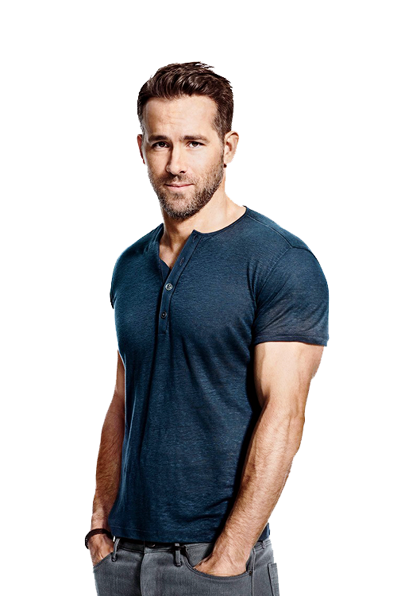

What began as a spark of curiosity and a small first project quickly grew into a passion and a clear
professional direction.
With an inquisitive mindset and a place in a field that never stops evolving, I soon realized that
programming wasn't just an interest
- it was the path I wanted to pursue.
Let's grow and create something Awesome together!
